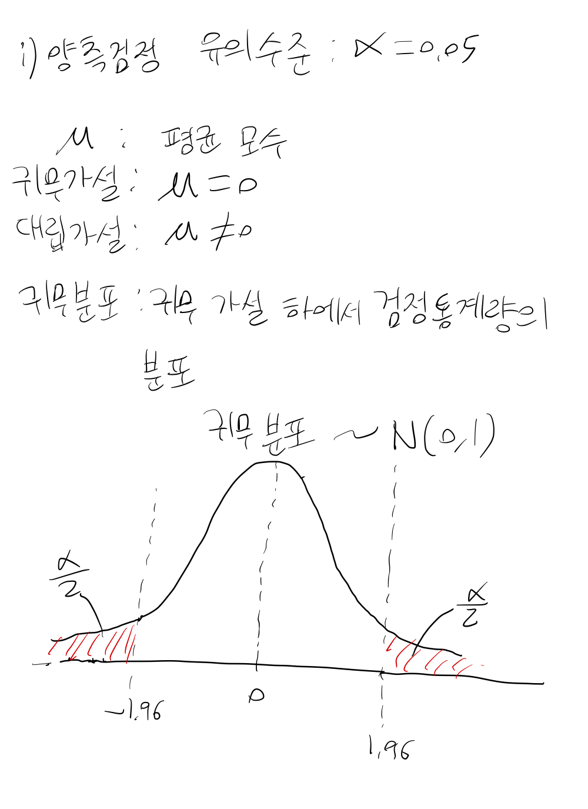
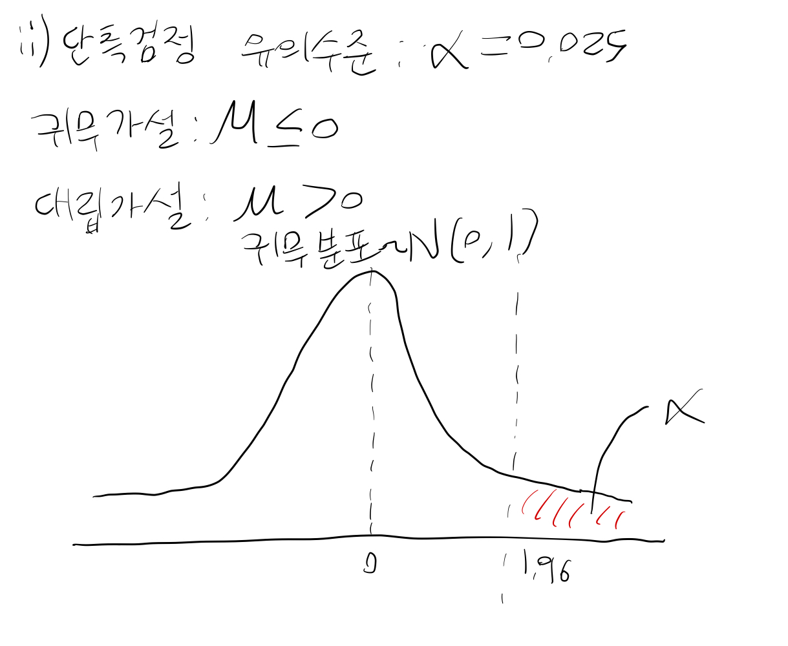
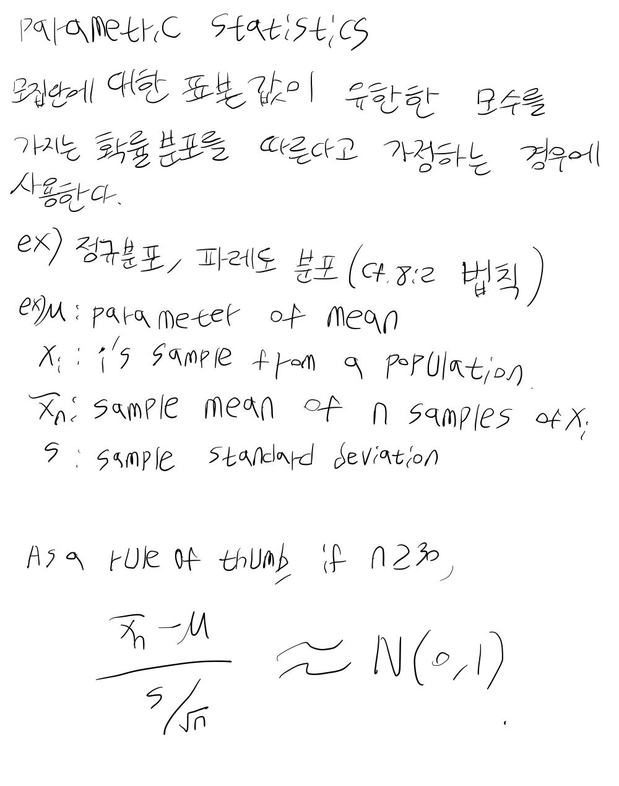
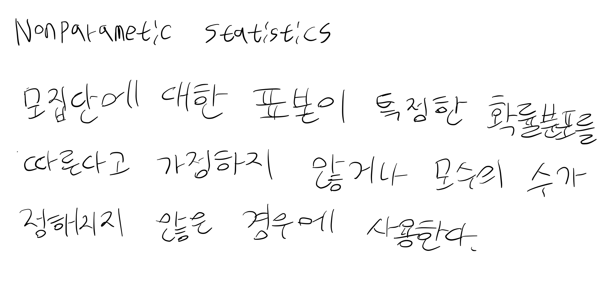

임상시험의 통계적 원칙 (E9) Part 2
5. 데이터 분석 고려사항
통계 분석 계획서(Statistical Analysis Plan, SAP)는 임상시험 계획서가 완성된 직후 작성되어야 하며, 데이터의 눈가림 리뷰(Blind Review)가 완료된 시점에 다시 한번 검토되어야 합니다.
분석 대상 집단 (Analysis Sets)
원칙적으로 모든 피험자의 데이터를 확보하는 것이 목표이지만, 실제로는 중도 탈락이나 결측치 발생이 불가피합니다. 이러한 상황에서 발생할 수 있는 편향(Bias)을 최소화하고 제1종 오류를 통제하기 위한 대책을 수립해야 합니다.
1. ITT 분석군 (Full Analysis Set, FAS)
- ITT 원칙(Intention-to-Treat Principle): 무작위 배정된 모든 피험자를 분석에 포함하는 원칙입니다. 피험자가 계획을 엄격히 준수하지 않았더라도 배정된 군의 일원으로 분석합니다.
- 예외적으로 데이터 분석 전 객관적인 기준에 따라 일부 데이터를 제외할 수 있으나, 이는 충분히 정당화되어야 합니다.
2. 계획서 준수 분석군 (Per Protocol Set, PPS)
- 계획서를 충실히 따른 피험자들만을 포함하는 분석군입니다.
- 기준: 최소한의 처치를 받은 자, 일차 평가변수 측정이 가능한 자, 중대한 계획서 위반이 없는 자 등.
- PPS 분석은 편향의 위험이 있으므로 계획서에 제외 기준을 명확히 명시해야 합니다.
3. 민감도 분석 (Sensitivity Analysis)
- FAS와 PPS 결과를 비교하여 전체적인 결론의 일관성을 확인합니다.
- 우월성 시험에서는 FAS가, 동등성/비열등성 시험에서는 PPS가 더 중요한 의미를 가질 수 있습니다.
- 결측치 처리 방법이나 이상치(Outlier) 유무에 따라 결과가 어떻게 변하는지 확인해야 합니다.
추정, 신뢰구간 및 가설 검정
- 모든 추정치(Estimation)는 신뢰구간(Confidence Intervals)과 함께 보고되어야 합니다.
- 공변량 분석(ANCOVA) 등을 활용하여 정밀도를 높이는 노력이 필요합니다.
- 단측 검정(One-sided Test)을 사용할 경우 유의수준 설정에 유의해야 합니다.
| 양측 검정 (Two-sided) | 단측 검정 (One-sided) |
|---|---|
 |
 |
| 모수적 방법 (Parametric) | 비모수적 방법 (Non-parametric) |
|---|---|
 |
 |
다중성 (Multiplicity)
여러 개의 일차 변수, 다중 비교, 반복 측정 등 다중성 문제가 발생하면 제1종 오류가 증가합니다. 이를 조절하기 위해 일차 변수 지정, 가중치 조절, 또는 AUC(Area Under Curve) 활용 등의 방법을 고려해야 합니다.
층화 및 하위군 분석
- 임상시험 전 주요 영향 요인을 고려하여 층화(Stratification)를 실시할 수 있습니다.
- 하위군 분석(Subgroup Analysis)은 주로 탐색적 목적으로 수행되며, 하위군 간 치료 효과의 균일성을 확인해야 합니다. 하위군 분석 결과만으로 최종 결론을 내리는 것은 위험합니다.
6. 안전성 및 내약성 평가
범위 및 대상
안전성 분석군은 약물을 단 한 번이라도 투여받은 모든 피험자를 대상으로 합니다. 인과관계와 상관없이 발생한 모든 이상사례(AE)를 보고해야 합니다.
통계적 평가
- 이상사례 발생 비율, 노출 정도 등을 요약합니다.
- 장기 시험의 경우 생존 분석 방법론을 활용하여 누적 발생률을 평가할 수 있습니다.
- 신뢰구간을 통해 안전성 프로파일을 기술하고, 필요한 경우 그래프를 활용한 시각화를 병행합니다.
7. 보고 (Reporting)
평가 및 보고 절차
- ICH E3 지침에 따라 상세 보고서를 작성합니다.
- 분석 전 리뷰에서 피험자 제외 기준, 데이터 변환(Log 등), 이상치 처리 등을 확정합니다.
- 계획되지 않은 추가 분석(Post-hoc Analysis)은 계획된 분석과 명확히 구분하여 보고해야 하며, 과도한 해석을 경계해야 합니다.
데이터베이스 통합 요약
- 상품화를 위해 전체 임상 데이터를 통합하여 요약합니다.
- 메타 분석 등을 위해 변수의 정의와 측정 과정을 일관되게 유지하는 것이 중요합니다.
- 안전성 데이터는 충분한 대조군과의 비교를 통해 위험-이익 관계를 적절히 평가해야 합니다.